Transaction Matching Implementation
Transaction Matching is one of the newer OneStream Marketplace solutions that is quickly becoming invaluable in the OneStream world.
If you have never worked with a Transaction Matching tool, its concept and use may be foreign. At the simplest level, Transaction Matching is used to compare data sets and help identify missing information. The OneStream Transaction Matching solution facilitates matching by utilizing rules that are set up in a User-friendly interface.
Chapter 6 focused on the administration of Transaction Matching, and Chapter 8 will focus on User Experience. Both chapters cover all of the included functionality that comes with the Transaction Matching solution and how to use the tool. In this chapter, however, the focus will be on the design and build concepts of Transaction Matching, and we will explain why we build the solution the way we do. The Design and Build chapter of the OneStream Foundation Handbook covers all the functional ideas of requirements and design, so this chapter will be focused on requirements and design that are specific to Transaction Matching.
Transaction Matching Implementation
Design
As stated in the OneStream Foundation Handbook, “Design is the most important part of the project.” I think this becomes even more true when you have never been a part of a Transaction Matching project. My hope is that – after reading this section of the chapter – you will understand all of the different pieces that need to be discussed for a OneStream Transaction Matching project, guiding and enabling you to run a successful project from start to finish.
Transaction Matching Implementation › Design
Scoping
As with any project, it is important to clearly define what is considered in scope versus out of scope. This is a standard concept that consultants should be familiar with. Scoping has a section in this chapter for two reasons:
Transaction Matching projects can be handled very differently than a standard Consolidation or Planning project.
To provide you with high-level scoping considerations and questions.
Similar to a Consolidation or Planning project, some customers want the implementation partner to build out the full solution from start to finish. Other customers will ask the implementation partner to build out the more difficult Transaction Matching Match Sets, customizations, and custom Reports. Once the more difficult work is complete, the customer will proceed to finish the rest of the work on their own. This is a common approach that works for Transaction Matching and should be discussed with the customer.
Below is a high-level list of specific Transaction Matching questions that should be asked when scoping a Transaction Matching project:
Transaction Matching Implementation › Design › Scoping
Data:
How many data sources will you be loading into Transaction Matching?
How will the data be loaded to OneStream (e.g., direct connect or file load)?
Do any of the data imports need to be split during import?
Will the data files be incremental (every file will only contain net new data)?
Does any of the source data need Calculations, additional fields, or Business Rule-generated data before being loaded to Transaction Matching?
Transaction Matching Implementation › Design › Scoping
Security:
How many Users will need access to Transaction Matching?
What will the roles be for each User?
Is security driven by Entity/IC or by other Dimensions?
Transaction Matching Implementation › Design › Scoping
Workflows:
Do they want a centralized or decentralized Workflow process?
How many Match Sets will be needed?
Transaction Matching Implementation › Design › Scoping
Match Sets:
What is the data volume for each Match Set?
How frequently do you perform matching for each Match Set?
How many rules will each Match Set need?
Transaction Matching Implementation › Design › Scoping
Reporting:
Provide examples of Reports you are looking to receive out of the OneStream Transaction Matching system.
What custom Reports and Dashboards are needed?
Transaction Matching Implementation › Design › Scoping
Customizations:
Are there any customizations you are looking to have built out for your Transaction Matching solution? (Note: Due to the solution’s Business Rules being encrypted, you are limited to the customizations that you can perform in the solution.)
Transaction Matching Implementation › Design › Scoping
Training:
Currently, OneStream does not offer specific training for Transaction Matching, so do you need to include custom training in the scope of the project?
Transaction Matching Implementation › Design
Data
Transaction Matching Implementation › Design › Data
Data Volume
Typically, data volume is not something that is heavily discussed during a standard design session. However, when designing Transaction Matching, there needs to be a discussion around the volume of data. If you are working with a large company and they are implementing Transaction Matching, there is a good chance you may be dealing with millions of lines of data per month.
Similarly, when dealing with large data loads to a Cube, you want to consider how you can break up the data into smaller loads. There are two main performance reasons for breaking up large data loads: the processing time to import data, and Matching Rules will process faster with smaller, more frequent loads. Another benefit to having multiple imports is that they provide you with more flexibility if data needs to be reloaded or reprocessed. If only one of the imports has an issue, you will only need to reprocess that specific load and not the full data set.
It is important, during the design phase, to identify the fields the customer needs (versus wants) in Transaction Matching. It can be helpful to identify the source fields and separate them into groups of how they will be utilized in Transaction Matching. The table below provides the breakout I like to use during design sessions. This approach helps during the build and will also point out to the customer the fields they use for Transaction Matching.
| # | Grouping of Data Fields |
|---|---|
| 1 | Used for data splitting |
| 2 | Used for matching |
| 3 | Used for matching and reporting |
| 4 | Used for reporting only |
| 5 | Used for supporting detail to Account Reconciliation |
Figure 7.1
Transaction Matching Implementation › Design › Data
Data Storage
As discussed in chapter 6, OneStream utilizes Workflows to import data into Transaction Matching. It is important to keep in mind – during the design discussions – that the import works differently to how you might be accustomed. When an import for Transaction Matching kicks off, it first loads the data into a Stage table. Next, it moves the data to the Transaction Matching XFW_TXM_Transaction table where each record is assigned a unique Transaction ID. Finally, all but one row is deleted from the Stage table as shown in Figure 7.2.
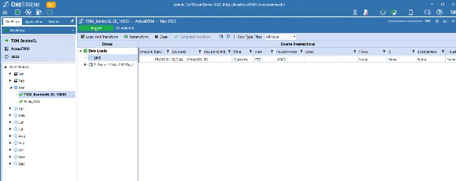
Figure 7.2
The import process was changed for performance reasons since there is no need to hold all the data in the OneStream environment in two different places, especially when you are dealing with the volume of data that comes with Transaction Matching. The one row of data persists per Workflow, Scenario, Time, and data source ID. This allows OneStream to identify where all the data in Transaction Matching was loaded from, and becomes important when clearing data out of Transaction Matching.
Not having the data stored in Stage may seem problematic because we cannot use traditional drill down functionality, but it has no impact on the ability to report off any Member brought in during an import. As shown in Figures 7.3 and 7.4, the Transaction Matching tables that hold the source and target data are almost identical to the Stage tables.
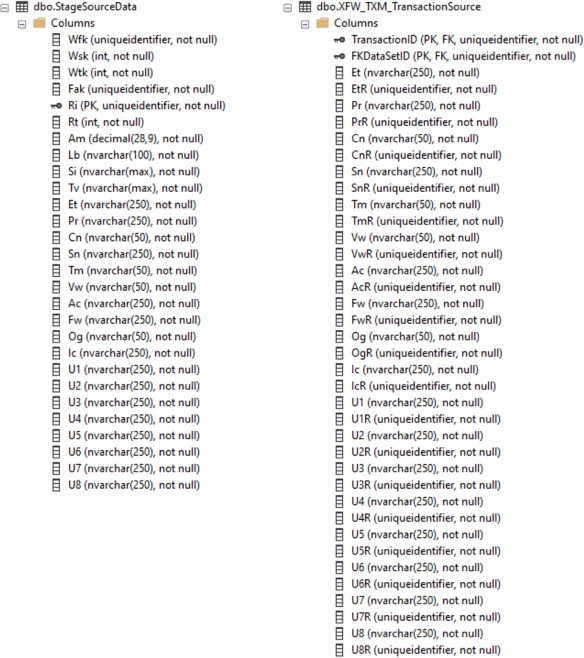
Figure 7.3
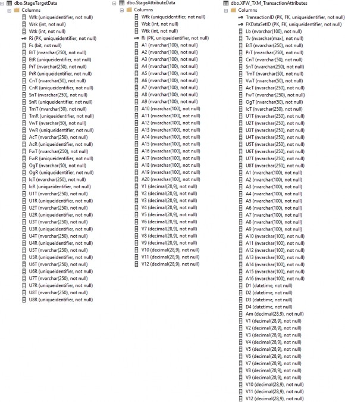
Figure 7.4
There is also a view of the data in Transaction Matching that contains all of the source, target, and attribute Members which is very similar to the vStageSourceAndTargetDataWithAttributes; see Figures 7.5 and 7.6.
vXFW_TXM_TransactionDetailWithSource becomes extremely useful for reporting purposes as will be discussed in the reporting section of this chapter.
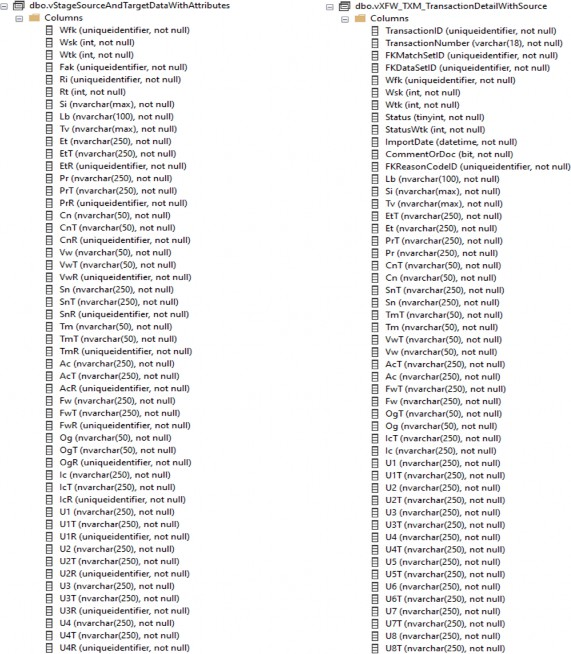
Figure 7.5
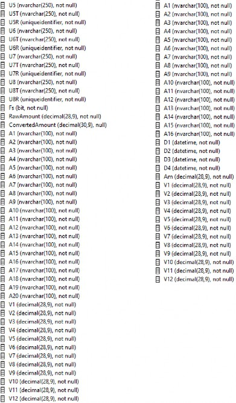
Figure 7.6
Transaction Matching Implementation › Design › Data
Loading Data
Transaction Matching Implementation › Design › Data › Loading Data
Reporting vs. Matching Amounts
It is important to understand how Transaction Matching views the amount fields when running the Matching Rules. The system does not net the amounts when trying to find matches, so the numbers need to have the same signage for each data set that gets Matched. When a customer is analyzing the data, they typically want to see the numbers net against each other. This requirement forces you to bring in the same amounts twice and have a matching amount and a reporting amount. This can be achieved by utilizing one of the 12 value fields. The matching amount will be used in the Matching Rules and the reporting amount will be used for reporting purposes. Depending on the raw data imported, you will need to flip the sign for one of the amount fields to achieve the appropriate signage.
Transaction Matching Implementation › Design › Data › Loading Data
Workflow Time
Understanding how Workflow Time works for Transaction Matching is critical for design discussions. The import period assigned to transactions is based on the Time Dimension, per the data source setup. In the data source, there are two main options used: Current Data Key Time and DataKey Text.
When using the Current Data Key Time setting, the data load Time period is based on the import Workflow Time. If using this option, all transactions will be associated to the Workflow Time where the data was loaded.
If using the DataKey Text option, you are telling OneStream to read a field from the data load and map each transaction to the appropriate Time period. When applying mapping to the Time Dimension, you can still import data to multiple months from one file. Transaction Matching creates a distinct list of source ID and target Time periods to identify where it needs to hold a single row of data in Stage.
Figures 7.7 to 7.9 show examples of a data file and what the Workflows look like after loading the file to the March Time period. You will notice that March and April both have a green check on the import step and contain a single row of data in Stage.
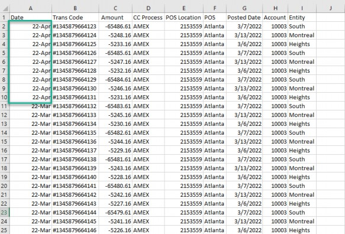
Figure 7.7
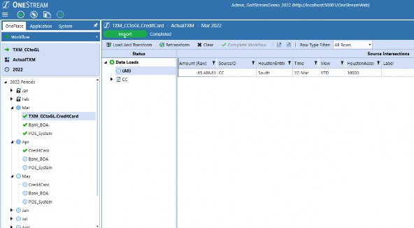
Figure 7.8
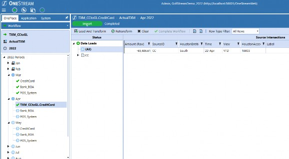
Figure 7.9
Transaction Matching Implementation › Design › Data › Loading Data
Incremental vs. Cumulative Files
The data storage section covered how Transaction Matching holds the data in the solution tables. Even though Transaction Matching utilizes Workflows to import data, it acts very differently, as seen by the data not residing in the Stage tables.
Most data loads to OneStream are performed as a replace, and loading a cumulative file is usually not a problem; however, with Transaction Matching it becomes an issue. Once a transaction is Matched in the system (either via Matching Rules or manually by the User), it becomes locked to ensure the integrity of the match. In order to update or remove a transaction from Transaction Matching, it needs to be Unmatched. That is why Transaction Matching expects incremental data files.
At times, though, incremental data loads may not be possible. When this is the case, the recommended approach is to create a process that checks the data which has already been loaded to Transaction Matching. This will ensure no duplicate data is loaded into the system.
Transaction Matching Implementation › Design › Data
Historical Data
If a customer is currently performing Transaction Matching, you will need to discuss the process of loading historical Unmatched items. Depending on the age of their current Transaction Matching process, they may have a large volume of Unmatched transactions that need to be brought into the system. This process may require its own data source setup, meaning it will also need its own import step. Logistically, this is not a problem because you can have multiple import steps assigned to one data set. I recommend loading all the Unmatched historical data to a prior month with no transactions. For example, if your start month is February, load all of the Unmatched transactions to January. The Transaction Matching solution displays all Unmatched transactions from both the current and prior months, so loading data to the prior month provides a clean load process and still allows you to access the historical Unmatched transactions.
Transaction Matching Implementation › Design › Data
Go Forward Data
Typically, Transaction Matching data is loaded daily and even more frequently during close. The cadence of the loads should be discussed during design as well as when the cutover will take place. With Transaction Matching being a live system, you will need to discuss – in detail – when the cutover will take place.
Transaction Matching Implementation › Design
Match Sets
As explained in Chapter 6, a Match Set in Transaction Matching relates to a specific Workflow Profile. The number of Match Sets that will be needed in a Transaction Matching environment is driven by your matching process and security requirements.
I like to think of a Match Set as its own standalone matching process that is not impacted by any other Match Sets. The Settings page is the only page that will be the same across multiple Match Sets (Figure 7.10). Every other setting – including everything on the Match Set Administration page – are independent and have no impact on other Match Sets.
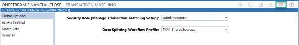
Figure 7.10
It is important to understand that Match Sets are not related to each other for a few reasons. First, and most importantly, this means that every single setting is unique to each Match Set. For example, say there are 10 people who are responsible for matching a certain data set – if you create 10 different Match Sets, one for each person, you just created 10 different Match Sets that all need to be setup and maintained separately. This situation can quickly become a maintenance nightmare, which is what we want to avoid.
When discussing Match Sets during the design phase, I always try to capture the full picture of who is responsible for the data. Often, a full data set will be broken up into subsets based on multiple Users being responsible for their own subset. Depending on how the data is broken up, this may call for multiple Match Sets to be created, or all the data can still sit in one Match Set. A common mistake people make is thinking they need to create a Match Set for each Account Reconciliation. This is not necessary and only ends up creating more points of maintenance. Security capabilities are explained in the Security section of this chapter.
Transaction Matching Implementation › Design
Match Set Rules
Match Set Rules are straightforward, but there are a few important things to keep in mind. As noted in the Match Set section, Match Set Rules are specific to a Match Set. This means Match Set Rules cannot be shared across Match Sets and must be manually created as they cannot be uploaded to a Match Set. As shown in Figure 7.11, you have the ability to copy a rule within a Match Set.
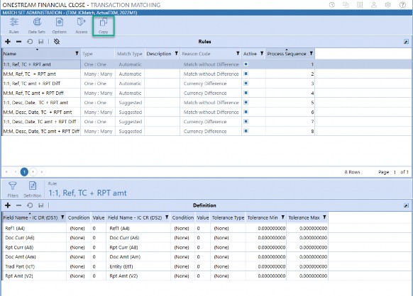
Figure 7.11
Even though we cannot copy rules across Match Sets, we do have the ability to create a copy of a Match Set, as shown in Figure 7.12. This can be very helpful during the build phase, especially if you have multiple Match Sets that have similar settings and Matching Rules. Copy functionality allows you to setup one Match Set and create as many copies as needed.
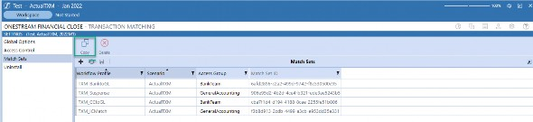
Figure 7.12
Below is a summary of what can and cannot be done with Match Sets and Match Rules.
Match Set Rules cannot be shared across Match Sets (the concept of a Parent Match Set does not exist).
Match Set Rules must be created using the OneStream interface; Match Set Rules cannot be uploaded to a Match Set.
Match Set Rules cannot be exported together.
Match Set Rules may be copied within the same Match Set.
Match Sets may be copied.
Transaction Matching Implementation › Design
Data Access Security
While security is always discussed during a design session, the conversation will often be high-level with the more detailed discussions occurring during the build phase. When it comes to security for Transaction Matching, the design should be broken up into two sections: granting access to the data and the actions a User can perform once they have access. The detailed discussions on data access need to take place during design as data access security is one of the main drivers for how many Match Sets need to be created. This section is focused on data access security as the security within Transaction Matching is covered in the Access Control section in Chapter 6.
The data access security discussion should start by asking the customer to identify the people who need access to each group of data. After identifying the people assigned per data group, the discussion needs to be focused on whether the security needs to go down to the next level. Once a User has access to a Match Set, we can limit their data access by Entity, IC, Entity or IC, or Entity and IC. Let’s review a few different situations, and how data access security drives the Match Set design.
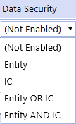
Figure 7.13
In this first example, a customer wants to perform matching against their Bank Accounts to their GL. If one person is responsible for each Account, this would result in five different Match Sets with the data for each Account being loaded to its respective Match Set. Remember, once a User has access to a Match Set, we have no way to limit the data they can view except by the Entity and IC Dimensions.
In the second example, a customer wants to perform matching for their IC Accounts. Multiple people will be involved in this process, but the segregation of data is by Entity and IC. This situation allows you to load all of the data to one Match Set and apply the Entity/IC security within the Match Set. When encountering an example like this, it is important to keep in mind that going with one Match Set just because security allows for it may not be the best design decision. This is where data volume should also be considered alongside security requirements.
The final thing to keep in mind about data access security is how it relates to Account Reconciliations. As mentioned in Chapter 6, if a customer is going to utilize data from Transaction Matching to help support their Account Reconciliation process, User security should align between both solutions.
Transaction Matching Implementation › Design
Transaction Matching to Account Reconciliation
Chapter 6 goes into detail about how to correctly setup the process of linking Transaction Matching with Account Reconciliations. When discussing each Match Set with the customer, it is important to understand if they want to use the data in Transaction Matching to help support their Account Reconciliation process. If the customer is planning on using Transaction Matching with Account Reconciliations, it is crucial to discuss with them that all tracking levels used for Account Reconciliations must also be included in the Transaction Matching data sets. This includes both the source and target Members for each Dimension used in the tracking level.
Transaction Matching Implementation › Design
Reporting and Analysis
Chapter 8 covers in detail the reporting that is included in Transaction Matching. Both the Scorecard and the Analysis pages provide snapshot reporting that is useful for understanding how successful the rules are. While the included reporting is a good starting point, most companies will require custom reporting. Every customer will have different requirements for their reporting but the most important thing to understand is how the Users need to analyze each Match Set. Custom Reports will be used to help identify issues with their data, and it is important to create Reports that enhance the User Experience. Below is a list of common Custom Reports which may be beneficial.
Customized Aging
Drill Down Reporting
Snapshot information in an email
The ability to analyze subsets of data
Transaction Matching Implementation › Design
Customizations
When implementing a OneStream MarketPlace Solution, it is common for a customer to ask for customizations to the solutions that fit their business needs. In turn, it is important to know that the majority of Transaction Matching Business Rules are encrypted, so you will not be able to accommodate every request from the customer. The encryption of Business Rules for MarketPlace solutions is becoming more common, especially for newer solutions. You will not be able to see the source code in any of the Business Rules that are encrypted so customizing anything within the solution-delivered Business Rules is not possible.
The one area where customizations can be setup is during certain events that occur in Transaction Matching based on a User’s actions. The Build Customization section of this chapter goes into detail as to how this customization can be setup along with the different options that are available.
| Note: Any customizations from a customer that cannot be accommodated due to encrypted Business Rules should be submitted to OneStream support. |
Transaction Matching Implementation
Build
Chapters 6 and 8 both discuss how to setup up all of the artifacts and how they work in Transaction Matching. In this section of the chapter, I will cover the nuances of implementing Transaction Matching and provide some tips and tricks to help guide you during the build phase.
Transaction Matching Implementation › Build
Pre-Configuration
After installing the OneStream Financial Close solution, there are several pre-configuration steps that need to occur before setting up Transaction Matching. The first step is the same as every other OneStream MarketPlace solution which is clicking the Create Tables button.
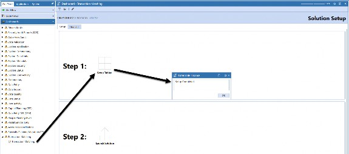
Figure 7.14
The second step is to modify the Transformation Event Handler Business Rule. The OneStream application does not come with a Transformation Event Handler so if your application does not have one, you will need to add it to make the required modifications. You can find a standard Transformation Event Handler in the GolfStream application that comes with every OneStream installation. Once the Transformation Event Handler is in the environment, the next step is to update it for Transaction Matching. You need to add the following two lines after the Select Case that checks for the operations name:
Dim txmHelper As New DashboardExtender.TXM_SolutionHelper.MainClass txmHelper.ProcessImportOrClear(si, globals, args)
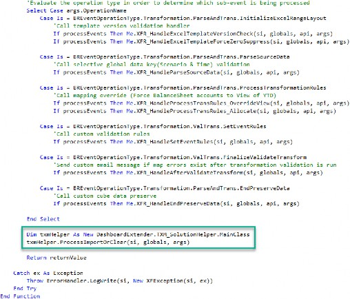
Figure 7.15
Next, you need to add BR\TXM_SoultionHelper to the Referenced Assemblies of the
Transformation Event Handler Properties tab, as shown in Figure 7.16:
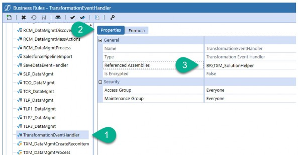
Figure 7.16
Modifying the Transformation Event Handler Business Rule is a vital step that completes setting up Transaction Matching. The modification initiates the process of moving the imported data to the Transaction Matching tables, creating the unique Transaction ID, and deleting the data from the staging tables.
I have received a lot of emails from people implementing Transaction Matching claiming they loaded data to Transaction Matching but are confused as to why they are not seeing data in the solution. Assuming the Workflow has been assigned as a Match Set in the Transaction Matching settings page, this is usually a signal that you either missed modifying the Transformation Event Handler or you incorrectly modified it.
Another indicator that this step was missed is if you see multiple lines of data from the same Source ID in the staging table. If more than one record exists, it means there is an issue with the Transformation Event Handler.
Figure 7.17 shows how the Stage data looks when there is an issue with the Transformation Event Handler, and Figure 7.18 shows how the Stage data looks when it is working correctly.
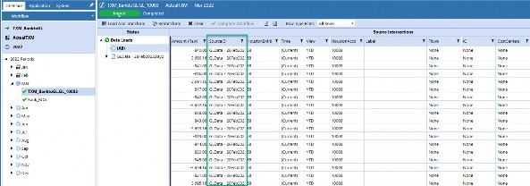
Figure 7.17
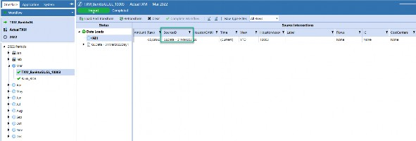
Figure 7.18
Transaction Matching Implementation › Build
Standard Configuration
Transaction Matching Implementation › Build › Standard Configuration
Data Sources
Transaction Matching Implementation › Build › Standard Configuration › Data Sources
Source ID
OneStream Workflows allow you to load multiple data files to the same import step if the Source ID is unique. If the Source ID is the same, it will replace the existing data. Due to Transaction Matching expecting incremental data files, the Source ID becomes an important piece of the data load. When building out the Source ID for Transaction Matching loads, everyone’s first instinct is to apply a Parser Rule to the data load that captures a time stamp of when the data gets loaded. On the surface, this seems like a great idea, but this approach will cause issues with loading data to Transaction Matching and should not be used.
A Parser Business Rule is processed on a row-by-row basis which becomes a problem when trying to utilize a time stamp. When loading data to Transaction Matching, we are often dealing with a large volume of data which can take time to import. By trying to utilize a time stamp in a Parser Rule with a data file that takes time to import, you can potentially create a disconnect between the Source ID that is shown in the Workflow Status Section and the Source ID that is associated to a specific data row. If a disconnect occurs, it can cause issues when trying to clear data as the system can no longer connect with where the rogue rows were loaded from.
Transaction Matching Implementation › Build › Standard Configuration › Data Sources
Source ID with Flat File
Creating a unique Source ID with a flat file load is more complicated than a connector import. The ideal solution is to have the customer provide a time stamp in the file name and utilize the file name as the Source ID. This approach provides a unique ID for each load and because the time stamp is in the file name it will be the same for each row loaded to OneStream. If the customer is not able to provide a time stamp in the filename, the recommended approach is to create a process that renames the file with a time stamp included in the file name before importing it to the Workflow.
Transaction Matching Implementation › Build › Standard Configuration › Data Sources
Source ID with Connector
When loading data to Transaction Matching via a data connector, the recommended approach is to create a new GUID, as per Figure 7.19, which can be passed to the SQL Select statement. You can then apply the GUID to the Source ID field in the data source. This approach ensures the Source ID will be unique per import, but every row per import will have the same Source ID.
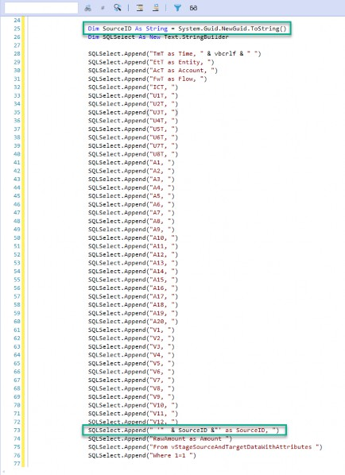
Figure 7.19
Transaction Matching Implementation › Build › Standard Configuration
Match Sets
The steps for setting up a Match Set are covered in Chapter 6. Once a Match Set has been created, there are other items to setup. Let’s start with the Rules page.
Transaction Matching Implementation › Build › Standard Configuration › Match Sets
Rules
Transaction Matching Rules are like Transformation Rules in Stage, and the same concepts can be applied when building out the rules. Like the Transformation Rules, the Transaction Matching Rules run in a predefined order which is set by the Process Sequence column as shown in Figure
7.20. The more precise rules should be set to run first, and the more generic rules should run last.
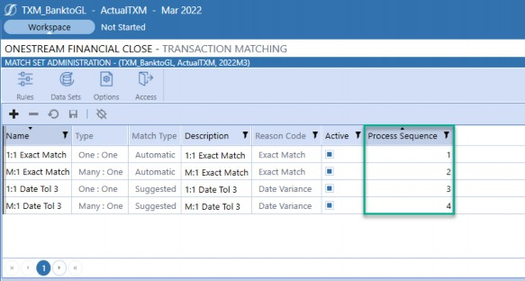
Figure 7.20
Transaction Matching Implementation › Build › Standard Configuration › Match Sets
Data Sets
Once a data set is created within a Match Set, and the data sources for all of the imports associated to the data set have been created, you need to assign the required fields. The field setup is specific to each data set within a Match Set. You only have one field setup per data set, so if you have multiple imports (as shown in Figure 7.21), you need to make sure the data sources for both imports align for the necessary fields. For example, if the data set field setup is utilizing Attribute 1 for document number, then both imports need to map the document number to Attribute 1 upon import.
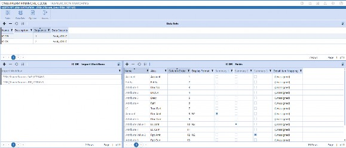
Figure 7.21
The Fields setting controls which Dimensions are displayed on the Transaction page and the detail on the Matches page. The Fields setting drives the available fields that can be utilized for Transaction Matching Rules so any field that needs to be used in a Matching Rule will need to be included.
The Fields setting also controls how the data syncs with Account Reconciliations so you will need to bring in the source and target Dimensions that are used to reconcile the data in Account
Reconciliations. Other fields that are not used in rules can also be brought in, but I would not recommend selecting every field that is available. If too many fields are brought into the Match Set, it can have a negative impact on the End-User Experience. In the design section, I discussed grouping the data fields that will be loaded to Transaction Matching; this is another area where the grouping exercise becomes important. Any field that is only used for reporting can be left out of the Fields setting.
| Note: Any field imported to Transaction Matching can be utilized in Custom Reports; even if it is not assigned in the Fields setting of a data set, you can still access the information. |
Transaction Matching Implementation › Build › Standard Configuration
Data Splitting
Data splitting may not be needed by every customer who implements Transaction Matching, but if it is needed it provides a lot of flexibility and requires less intervention with their IT team. You will identify if you need to utilize data splitting during the design phase of the project, but it is still something I recommend setting up even if it is not going to be used.
The steps to set up a data splitting Workflow are described in Chapter 6, but adding a Match Set to utilize the data splitting Workflow is a bit more complicated as the order of operations comes into play. The order and steps to add a Match Set to the data splitting Workflow are listed below.
The first step is to create an import step under the data splitting Workflow, make it active for the Transaction Matching Scenario Type, and apply the appropriate data source and Transformation Rules, as shown in Figure 7.22.
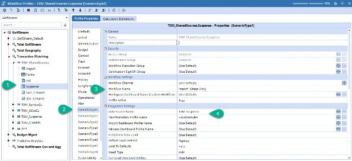
Figure 7.22
The next step is to create the Match Set Workflow where the matching activity will take place. If the Match Set is only using the data splitting Workflow to load data, then the Match Set Workflow should not have an active import step.
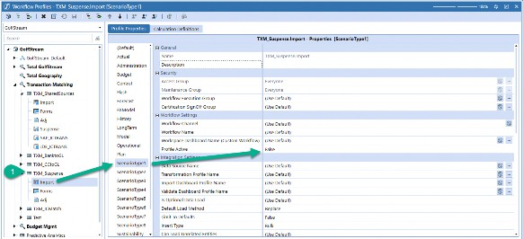
Figure 7.23
Next, you will navigate to the newly-created Match Set Workflow. Select the Match Set Administration page and create the appropriate data sets. Once the data sets are created, you need to assign the import Workflow step you created under the data splitting Workflow, as shown in Figure 7.24.
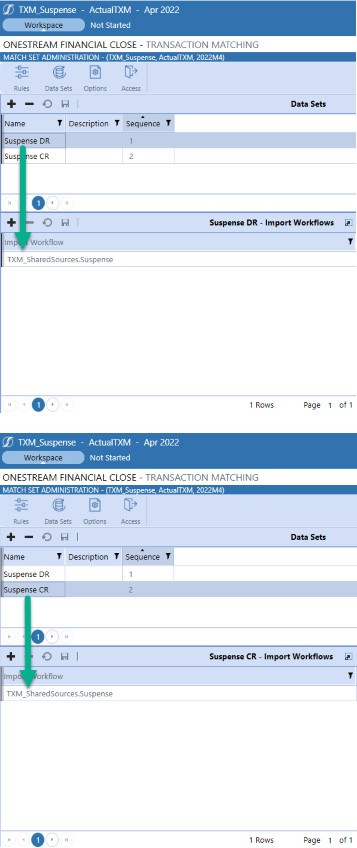
Figure 7.24
Once the import Workflows are assigned to the data set, go to the data splitting Workflow. From the data splitting Workspace, select the import Workflow from the Source Import drop-down, as per Figure 7.25.
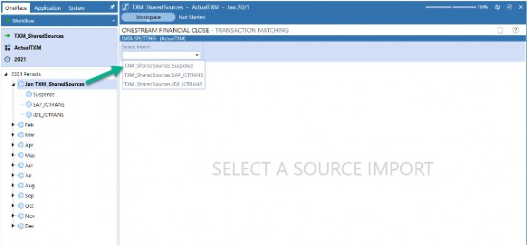
Figure 7.25
After selecting the appropriate import Workflow from the Source Import list, you need to add the data sets to the Target Data Sets screen, Figure 7.26. You should only see the data sets you just created under the Match Set Workflow.
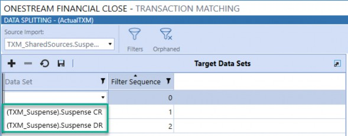
Figure 7.26
The final step is to assign the filter logic for each data set which is done in the Splitting Filters screen, Figure 7.27.
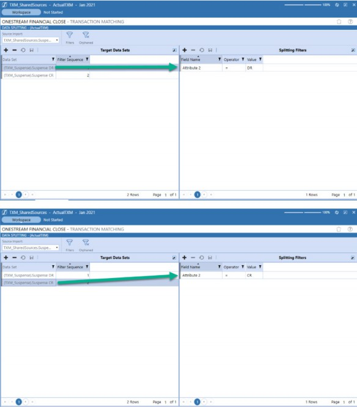
Figure 7.27
As mentioned previously, the order in which these steps are performed is very important and if they are not followed, you will receive errors during the set-up process.
Transaction Matching Implementation › Build
Custom Configuration
Transaction Matching Implementation › Build › Custom Configuration
Business Rules
As mentioned in the customization design section, you are limited to how much customization can be done within Transaction Matching due to the majority of Business Rules being encrypted. The table below provides a list of all of the Business Rules that come with Transaction Matching, plus their encryption status.
| Business Rules | Encrypted |
|---|---|
| TXM_DataMgmtCreateReconItem | Yes |
| TXM_DataMgmtProcess | Yes |
| TXM_EventHandler | No |
| TXM_HelperQueries | Yes |
| TXM_ParamHelper | Yes |
| TXM_SolutionHelper | Yes |
| TXM_SetupHelper | Yes |
Figure 7.28
Notice the one Business Rule that is not encrypted is the TXM_EventHandler Rule. This rule was left unencrypted so that customizations can be applied to Transaction Matching.
TXM_EventHandler allows you to utilize the Business Rule to apply customizations to certain events that occur within Transaction Matching. The Business Rule requires some initial setup steps, which are explained below.
The first step is to download the CustomEvents_TransactionMatching Business Rule which can be found under the Files section of the XFW Transaction Matching (TXM) Dashboard Maintenance Unit. See Figure 7.29.
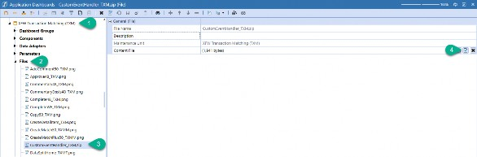
Figure 7.29
After downloading the zip file, it needs to be uploaded to the OneStream environment.
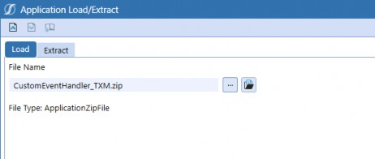
Figure 7.30
Once the file has been imported to the environment, you should see the
CustomEvents_TransactionMatching Business Rule under the Dashboard Extender section.
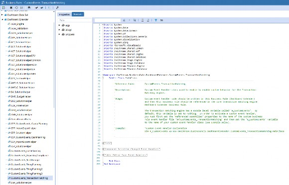
Figure 7.31
Next, the following Business Rules need to be updated to include the
CustomEvents_TransactionMatching in their Referenced Assemblies, as shown in Figures
7.32 and 7.33.
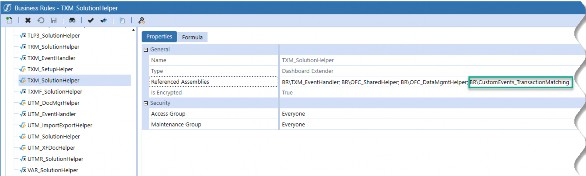
Figure 7.32
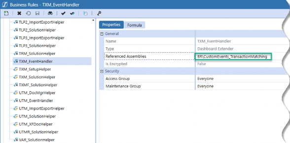
Figure 7.33
Finally, you need to modify the code in the TXM_EventHandler. Line 42 needs to be commented out.
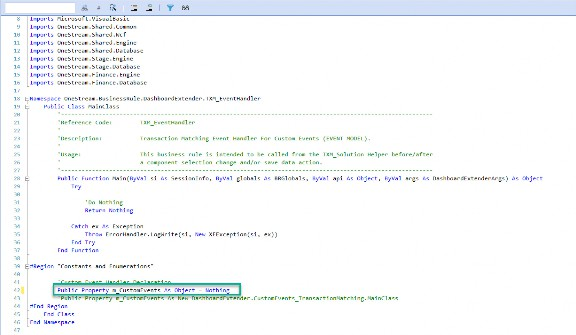
Figure 7.34
Then, you need to uncomment the line that calls the CustomEvents_TransactionMatching
Business Rule, which should be on line 43.
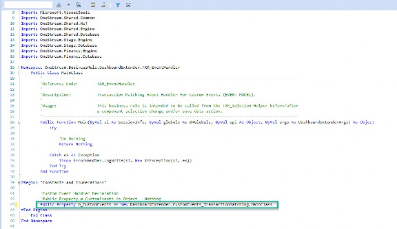
Figure 7.35
Once the setup is complete for the CustomEvents_TransactionMatching Business Rule, you can now apply customizations to Transaction Matching before or after the following events are clicked:
SaveSettingsCreateSolutionTablesValidateSetupStepsExecutedUninstallOnTableEditorOrGridSelectionOnComboBoxSelectionOnButtonClickOnShowContentPage
You can also apply customizations to Transaction Matching before or after the save event for a Table Editor.
OnSaveOrUpdateTableEditor
The following code provides examples of the types of customizations that can be setup utilizing the
CustomEvents_TransactionMatching Rule.
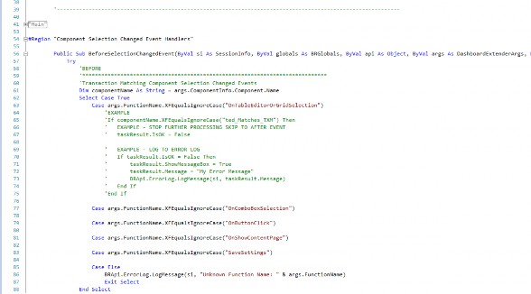
Figure 7.36
When upgrading Transaction Matching, the CustomEvents_TransactionMatching Business Rule will not be deleted but the Referenced Assemblies and modifying the TXM_EventHandler will need to be setup again.
Transaction Matching Implementation › Build › Custom Configuration
Automation
Due to the frequency of data loads to Transaction Matching, most companies want to automate them. The automation for loading data to Transaction Matching works exactly the same as for any other job that is automated to import data to a Workflow. Where Transaction Matching becomes unique is that after the data is loaded, you want to automatically run the Matching Rules. As part of the Transaction Matching install, a Data Management job is installed that processes the Matching Rules. The out-of-the-box Data Management job runs the rules based on the Match Set the User is on.
When setting up the process to automate the rules running after a data load, the first step is to create a new Data Management Group. I typically like to call it TXM_Custom. By creating a new Data Management Group, you are ensuring that this customization piece will not be deleted during an upgrade. After creating a new group, you need to create a step that calls the TXM_DataMgmt_Process Business Rule. As shown in Figure 7.37, this is what the Data Management job calls.
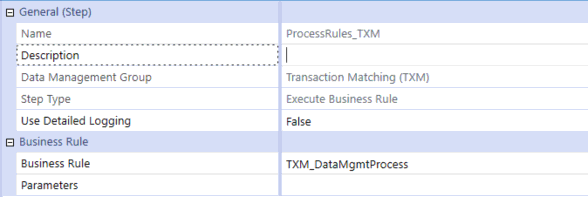
Figure 7.37
Your new custom step will need one modification, as shown in Figure 7.38, where you need to pass in the correct Match Set ID to inform Transaction Matching which rules need to be processed.
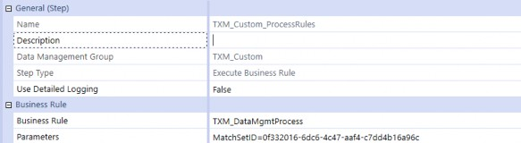
Figure 7.38
You can find the Match Set ID for each Match Set on the Settings page under the Match Sets section, Figure 7.39.
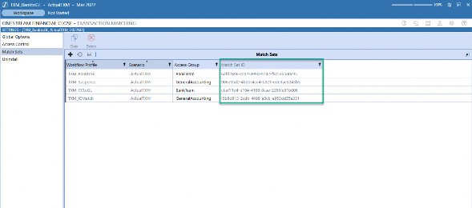
Figure 7.39
Transaction Matching Implementation › Build
Custom Reports
As I have mentioned a few times, when working with Transaction Matching, you will be dealing with a large volume of data. The volume of data can become a big issue with Custom Reports as it will have a significant impact on Report performance. The best approach to dealing with the volume is to break up data sets into a more manageable size. This section of the chapter will provide you with vital information from the backend tables that will help you in breaking up the data sets.
Transaction Matching Implementation › Build › Custom Reports
Transaction Matching Tables
All of the data in Transaction Matching sits in tables that are specific to the solution and are outside OneStream Cubes. Because the data does not sit in the Cubes, you cannot utilize a Cube View to pull data out of Transaction Matching. Instead, you need to utilize data adaptors and write SQL Select statements to create Custom Reports.
Understanding the Transaction Matching tables is the first step to creating Custom Reports. Figure
7.40 shows all the tables, and Figure 7.41 shows all the views that hold all the data in Transaction Matching.
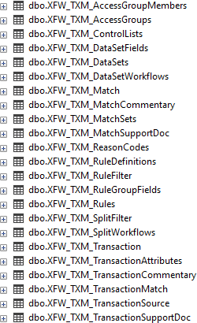
Figure 7.40
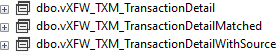
Figure 7.41
The name of each table and view provides a hint as to what each table contains, but to see all the detail you will need to look at all the columns in each table. The query shown in Figure 7.42 can be run – using a data adaptor – against any table or view and will allow you to see all the columns for each table. You will need to replace the table or view name depending on what table or view you want to see. Notice, the query is only grabbing the top 10 rows from each table. This is done on purpose as some of the tables will contain millions of rows of data.
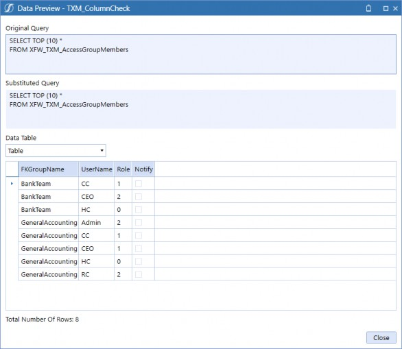
Figure 7.42
Transaction Matching Implementation › Build › Custom Reports
Tips and Tricks
Below are helpful tips and tricks that will assist you with creating Custom Reports for Transaction Matching.
Status table code for the following:
XFW_TXM_TransactionvXFW_TXM_TransactionDetailvXFW_TXM_TransactionDetailWithSource
| Status Code | Definition |
|---|---|
| 0 | Unmatched State |
| 1 | Suspended State |
| 2 | Matched State |
| 3 | Pending Delete State |
| 4 | Deleted State |
Figure 7.43
Status table code for the following:
XFW_TXM_MatchvXFW_TXM_TransactionDetailMatched
| Status Code | Definition |
|---|---|
| 0 | Pending Approval Status |
| 1 | Approved Match Status |
Figure 7.44
The query in Figure 7.45 captures all the data sets that have Matched transactions in Transaction Matching.
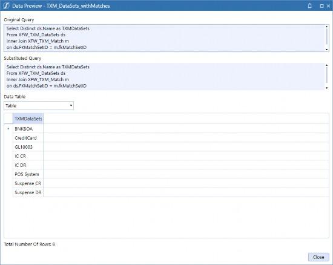
Figure 7.45
The query in Figure 7.46 captures all the Workflows and data sets associated with Transaction Matching.
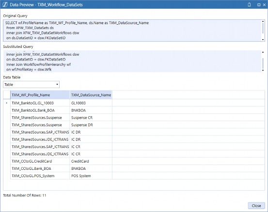
Figure 7.46
The query in Figure 7.47 captures all the Workflow imports, Transaction Matching data sources, and splitting information associated with the data splitting Workflow.
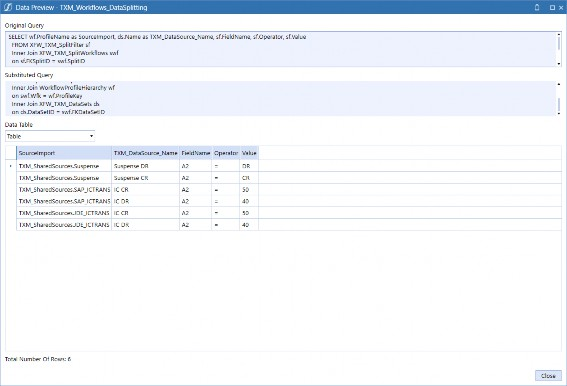
Figure 7.47
I recommend providing a Large Data Pivot Grid to every Transaction Matching customer because it provides each User with the ability to manipulate the data and save their unique changes. The large data pivot is also made to handle large data sets with its Grid’s Paging feature and server-based processing.
Figures 7.48 to 7.50 show how you can utilize a large data pivot grid and make it fully dynamic by pulling the data associated with the Match Set the User is on when they run the Custom Report.
This will work for all Match Sets in the Transaction Matching system.
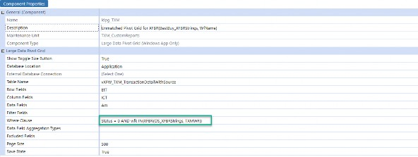
Figure 7.48
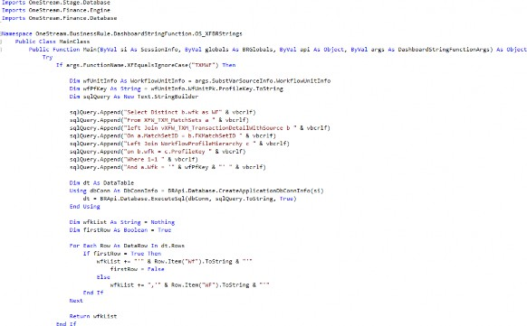
Figure 7.49
| Note: The above code demonstrates how to dynamically grab all of the Workflow imports that are associated to the Match Set the User is viewing. |
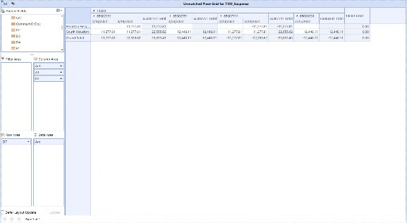
Figure 7.50
Transaction Matching Implementation
Testing and Training
If a customer is just starting out with Transaction Matching, or if they perform their current matching in Excel, testing and data validation should be easy to perform. However, if they are coming from an existing Transaction Matching solution, the data validation and parallels will be more complex to coordinate and perform.
Transaction Matching Implementation › Testing and Training
Data Validation
Data volume can impact data validation for Transaction Matching. It is unrealistic for a customer to validate millions of lines of data each month. Instead, most customers are comfortable with high-level checks like a row count check for each import, or a sum of all the data loaded to each Workflow. Figures 7.51 and 7.52 provide some sample queries that can be used for some high-level validation checks.
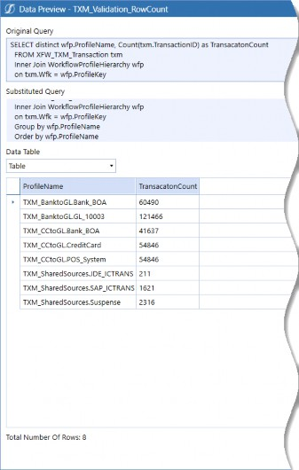
Figure 7.51
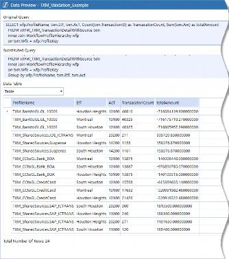
Figure 7.52
Transaction Matching Implementation › Testing and Training
End User Training
OneStream does not currently offer specific training for Transaction Matching which means that End Users will need custom training. I personally prefer the train the trainer approach as I think it helps Power Users/Admin(s) become stronger in understanding their Transaction Matching solution. End User training for Transaction Matching should not take more than a full day.
Transaction Matching Implementation › Testing and Training
Parallels
After a parallel is complete, you need to keep in mind whether the customer continues to load with the same frequency post-parallel. If they do not, this may cause you to clear the data out of Transaction Matching and reload the history before the next parallel or go-live.
Transaction Matching Implementation
Conclusion
I hope this chapter provided you with enough knowledge to feel confident in leading a Transaction Matching project. Hopefully, you can now utilize this information to create an ideal User experience that will have them excited about working with the OneStream Transaction Matching solution.